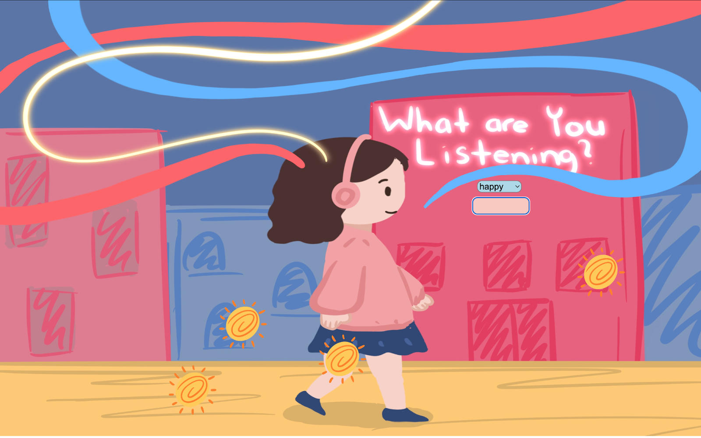

Music Diary
Crystal Zhou, 2025
Music Diary transforms my music listening habits and moods into dynamic visuals using lines, colors, and symbols, revealing patterns in daily emotions and routines.


Music Diary transforms my music listening habits and moods into dynamic visuals using lines, colors, and symbols, revealing patterns in daily emotions and routines.

Music Diary is an interactive project that visualizes my music listening habits and moods using lines, colors, and symbols. The visuals adapt to my listening patterns, revealing connections between songs, activities, and emotions. This project turns personal data into a reflective experience that highlights patterns in daily life.
Skills: JavaScript, HTML, CSS, Procreate
This interactive data visualization was built using JavaScript, HTML, and CSS. You enter the number of songs you’ve listened to in each category and the line for the category with the highest number shines, highlighting the dominant mood. Symbols represent each song type and their size and quantity reflect the input data. For example, ten songs produce one big symbol while twenty-one songs produce one big symbol plus one small symbol. Press the spacebar to move between scenes. All data is stored locally, allowing the visualization to evolve over time, and pressing C clears everything to start fresh. Because it responds to real input, each scene is unique, showing how listening habits and emotions shift over time.